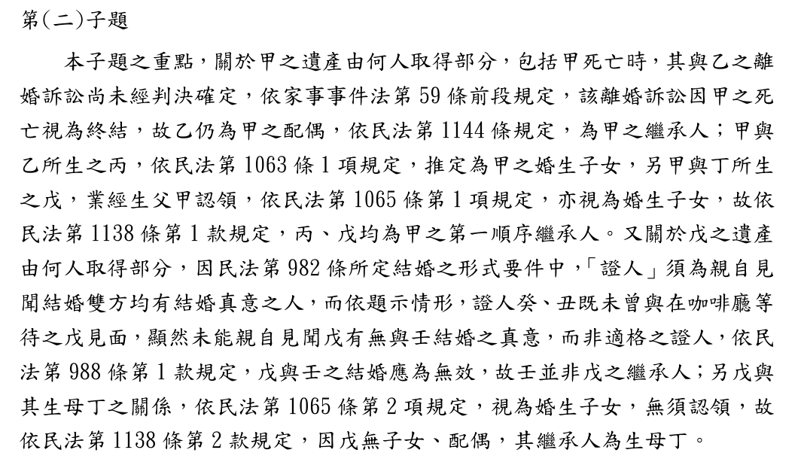
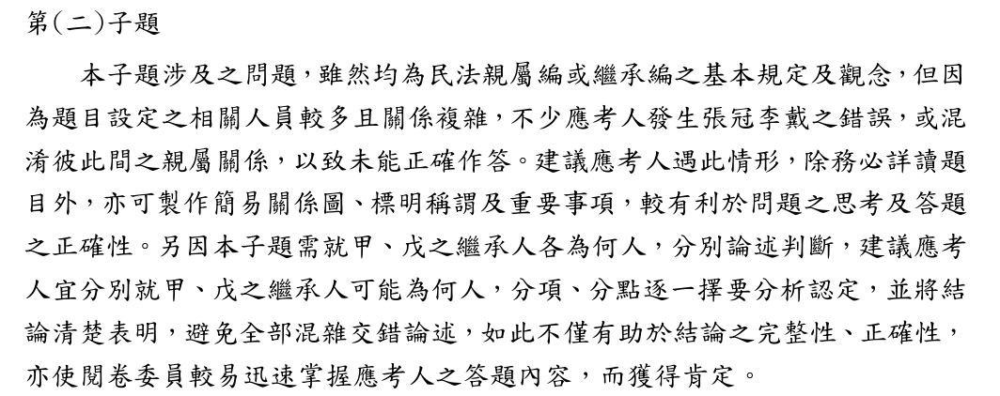

甲走了，戊也走了，遺產給誰？
112年律師第二試｜民法與民事訴訟法（一）｜第二題第（二）小題（25分）
題目
這一題有三個小題。本頁只做第（二）小題，用得到的事實畫黃色底線。
法院於112年5月30日為第一審判決，敗訴之一方已依法提起上訴，嗣甲於112年7月30日死亡，甲死亡後遺有A地、B屋（含基地），其遺產尚未分割。其中A地由庚無權占有並於其上擅自搭建C屋使用，B屋於甲生前即出租於辛，惟辛自111年7月1日起積欠租金，經甲屢次催告均置之不理，迄甲死亡時已積欠租金達新臺幣（下同）60萬元。
戊於甲死亡後於咖啡廳與網友壬見面，與壬甫結識2小時即決定結婚，壬當場書立結婚書約，因咖啡廳內只有店員一人且不願意擔任結婚證人，故壬外出覓得原不相識之路人癸、丑於結婚書約證人欄簽名，戊則於咖啡廳內等待壬取得證人簽名，再與壬持該結婚書約共赴戶政事務所辦理結婚登記，嗣戊於結婚登記翌日死亡。試問：
- （一）第一審法院為本案判決時，應如何判斷甲之離婚請求有無理由？（25分）
- （二）甲之遺產由何人繼承取得？戊之遺產由何人繼承取得？（25分）本頁只做這一題
- （三）丙是否得單獨對庚起訴，請求拆除C屋、返還A地？是否得單獨對辛起訴請求給付112年7月30日以前積欠之租金60萬元？（25分）
影片說明
影片依序示範：主播介紹、整題讀一遍並框出第（二）小題、畫關係圖、學弟學姊、乙還是配偶、第一順序繼承人、各三分之一、咖啡廳裡的結婚證人、婚姻無效、由生母丁繼承、三個易錯點，最後把擬答從頭看一遍。
互動：關係圖（點按鈕切換）
閱卷委員建議：這類人多的題目，先畫簡易關係圖、標明稱謂，再分開寫甲、戊的繼承人。
雙線：夫妻；虛線：未結婚或婚姻無效；①②：死亡先後。應繼分的分母由頁面程式依繼承人數計算。
答題順序：兩個人分開寫
| 甲的遺產 | 戊的遺產 | |
|---|---|---|
| 配偶 | 乙：離婚訴訟視為終結，仍是配偶 | 壬：結婚欠缺適格證人，婚姻無效，不是配偶 |
| 第一順序（子女） | 丙（推定婚生）、戊（認領） | 題示未見子女 |
| 第二順序（父母） | （不用往下找） | 甲已先死；丁（生母，視為婚生） |
| 結果 | 乙、丙、戊各1/3 | 丁繼承全部遺產（包括戊自甲繼承的1/3） |
本題用到的條文與判決
先看要件，再套本案事實。原文中畫底線的部分，就是本題用到的那一句。
家事事件法第59條（甲的遺產：乙還是配偶嗎）
離婚之訴，夫或妻於判決確定前死亡者，關於本案視為訴訟終結；夫或妻提起撤銷婚姻之訴者，亦同。
本題甲在第一審判決後、判決確定前死亡，離婚訴訟視為終結，乙仍是甲的配偶，依民法第1144條有繼承權。
民法第1063條第1項、第1065條、第1138條（誰是子女、誰排第幾順序）
第1063條第1項：妻之受胎，係在婚姻關係存續中者，推定其所生子女為婚生子女。
第1065條：非婚生子女經生父認領者，視為婚生子女。其經生父撫育者，視為認領。非婚生子女與其生母之關係，視為婚生子女，無須認領。
第1138條：遺產繼承人，除配偶外，依左列順序定之：一、直系血親卑親屬。二、父母。三、兄弟姊妹。四、祖父母。
| 人 | 依據 | 身分 |
|---|---|---|
| 丙 | 第1063條第1項 | 甲的婚生子女（推定） |
| 戊（對甲） | 第1065條第1項 | 經甲認領，視為婚生子女 |
| 戊（對丁） | 第1065條第2項 | 視為丁的婚生子女，無須認領 |
民法第1141條、第1144條第1款（各分多少）
第1141條：同一順序之繼承人有數人時，按人數平均繼承。但法律另有規定者，不在此限。
第1144條第1款：配偶……與第一千一百三十八條所定第一順序之繼承人同為繼承時，其應繼分與他繼承人平均。
本題乙、丙、戊三人平均，各1/3。
民法第982條、第988條第1款（戊的遺產：壬是配偶嗎）
第982條：結婚應以書面為之，有二人以上證人之簽名，並應由雙方當事人向戶政機關為結婚之登記。
第988條：結婚有下列情形之一者，無效：一、不具備第九百八十二條之方式。……
最高法院111年度台上字第1104號民事判決（111.06.15）
按結婚應以書面為之，有二人以上證人之簽名，並應由雙方當事人向戶政機關為結婚之登記，民法第982條定有明文。該條所謂二人以上證人，應以親見或親聞結婚雙方當事人確有結婚真意之人，始足當之。
| 要件 | 本案事實 | 結果 |
|---|---|---|
| 二人以上證人簽名 | 癸、丑在結婚書約證人欄簽名 | 形式上有 |
| 證人親見或親聞雙方結婚真意 | 壬在咖啡廳外找來的路人，戊在店內等待，癸、丑未曾與戊見面 | ✕ |
| 結果 | 欠缺適格證人，依第988條第1款無效 | ✕ 壬不是配偶 |
注意癸、丑和雙方原本不認識，並不是關鍵；關鍵是他們沒見過戊。
歷審本判決廢棄發回，該案其後經更審、再上訴，現仍在再審程序中；本頁引用的是最高法院對第982條「證人」的說明。
條文依全國法規資料庫現行條文核對（2026-11-20）；判決已打開全文確認為最高法院自己的見解，並核對歷審。
答題地圖
考選部評分要點與閱卷委員的話

閱卷委員的話：
- 雖然都是親屬編、繼承編的基本規定，但人員多、關係複雜，不少考生張冠李戴或混淆親屬關係。
- 建議製作簡易關係圖、標明稱謂及重要事項。
- 甲、戊的繼承人要分項、分點逐一分析，結論清楚，避免混雜交錯。

來源：考選部〈112年司法官、律師考試第二試法律專業科目評分要點與閱卷委員的話〉民法與民事訴訟法（一）第7、8頁，已轉成圖片逐頁核對。
擬答
甲之遺產由乙、丙、戊繼承，應繼分各三分之一；戊之遺產由丁繼承。
一、甲之遺產
（一）乙仍為甲之配偶
離婚之訴，夫或妻於判決確定前死亡者，關於本案視為訴訟終結（家事事件法第59條）。甲於第一審判決後、判決確定前死亡，離婚訴訟視為終結，乙仍為其配偶，依第1144條有繼承權。
（二）丙、戊為第一順序繼承人
丙為甲、乙所生之子，依第1063條第1項推定為甲之婚生子女；戊經甲認領，依第1065條第1項視為婚生子女。二人均為甲之直系血親卑親屬，依第1138條第1款為第一順序繼承人。丙、戊依第1141條按人數平均繼承，乙與其同為繼承，依第1144條第1款應繼分平均，乙、丙、戊各三分之一。
二、戊之遺產
（一）戊與壬之婚姻無效
第982條所定二人以上證人，應以親見或親聞結婚雙方當事人確有結婚真意之人，始足當之（111台上1104）。癸、丑與戊、壬原不相識尚非關鍵，惟其係壬於咖啡廳外覓得，未曾與戊見面，無從親自見聞戊之結婚真意，非適格之證人。戊、壬之結婚欠缺適格證人，依第988條第1款無效，壬非戊之配偶，無繼承權。
（二）丁為唯一繼承人
題示未見戊有子女，亦無有效之配偶，生父甲已先於戊死亡。戊與生母丁之關係，依第1065條第2項視為婚生子女，無須認領，依第1138條第2款，丁為戊之繼承人。戊自甲繼承之三分之一應繼分，亦屬戊之遺產，由丁繼承。
擬答560字（含標題、標點與數字，不含空白，以程式計算）。25分題目參考上限561字（120分鐘×25/150＝20分鐘，扣讀題3分鐘，17分鐘×每分鐘約33字）。
學說補充
結婚證人「親見親聞」的範圍（是否須同時在場、是否須認識當事人），本頁尚未加入可核對的學說文獻。
預想易錯點
①②依評分要點整理，③依閱卷委員的話整理。
| 可能的錯誤 | 應該怎麼寫 |
|---|---|
| ① 以為甲乙在打離婚官司，乙就不能繼承 | 家事事件法第59條：判決確定前死亡，視為訴訟終結，乙仍是配偶。 |
| ② 以為壬辦了結婚登記，就是戊的配偶 | 證人須親見或親聞雙方結婚真意；欠缺適格證人，婚姻無效。 |
| ③ 人太多，把甲和戊的繼承人混在一起寫 | 先畫關係圖，再「一、甲之遺產」「二、戊之遺產」分開寫。 |